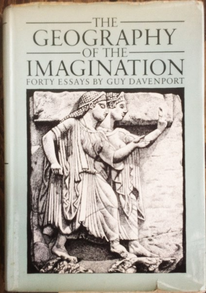

The Geography of the Imagination: Forty Essays
"The Geography of the Imagination," reprinted here, might be his finest essay, which means it might be the finest essay written in the last half-century or so. Davenport's free-range mind discovers patterns and archetypes where others have seen only discontinuities or, at best, dim resemblances, tracing arabesques of thought that connect Edgar Allan Poe to Alaric the Visigoth, Helen of Troy, Jupiter, Thomas Moore, Thomas Jefferson, Oswald Spengler; Spengler to James Joyce; O. Henry to Persephone; Carlo Collodi's "Pinocchio" to Ovid and Gnosticism and Pygmalion and the Book of Jonah; Thoreau to Diogenes; Eudora Welty to Ovid; Mark Twain to "a fifth-century Athenian mime." And all of these to Grant Wood's "American Gothic," which Davenport reads as a symbolic mosaic of the Industrial Revolution, European Protestantism, Egyptian history, Netherlandish painting, Mediterranean iconography and a dozen other cultural complexes.
— Michael Robbins
- personGuy Davenport
- import_contacts384 pages
- domainModern Lit Critique
- publish1981
![ The Geography of the Imagination: Forty Essays "The Geography of the Imagination," reprinted here, might be his finest essay, which means it might be the finest essay written in the last half-century or so. Davenport's free-range mind discovers patterns and archetypes where others have seen only discontinuities or, at best, dim resemblances, tracing arabesques of thought that connect Edgar Allan Poe to Alaric the Visigoth, Helen of Troy, Jupiter, Thomas Moore, Thomas Jefferson, Oswald Spengler; Spengler to James Joyce; O. Henry to Persephone; Carlo Collodi's "Pinocchio" to Ovid and Gnosticism and Pygmalion and the Book of Jonah; Thoreau to Diogenes; Eudora Welty to Ovid; Mark Twain to "a fifth-century Athenian mime." And all of these to Grant Wood's "American Gothic," which Davenport reads as a symbolic mosaic of the Industrial Revolution, European Protestantism, Egyptian history, Netherlandish painting, Mediterranean iconography and a dozen other cultural complexes. — Michael Robbins personGuy Davenport import_contacts384 pages domainModern Lit Critique publish1981](img/original/GOI.png){kind=link}